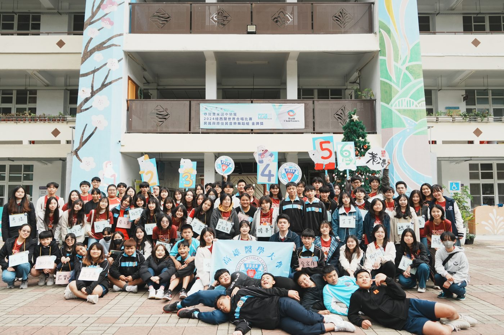
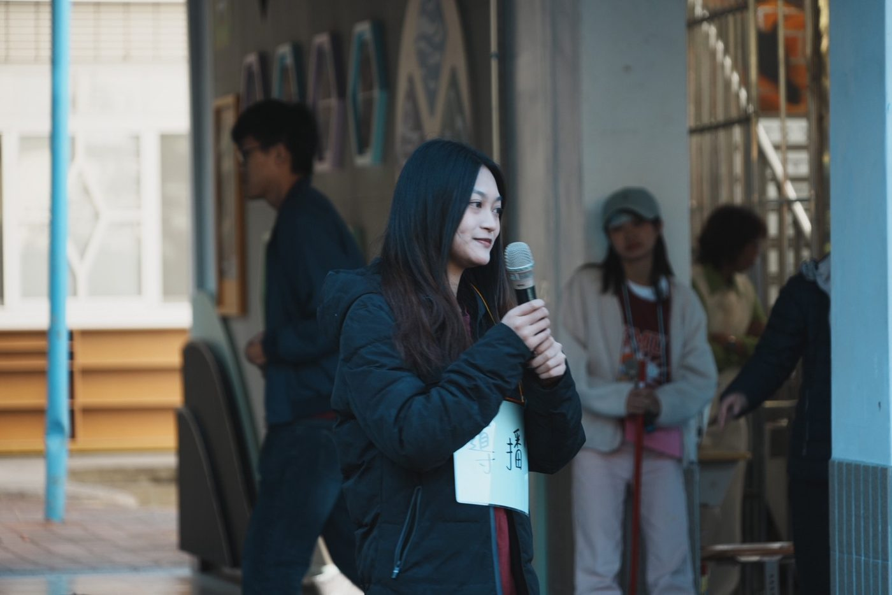
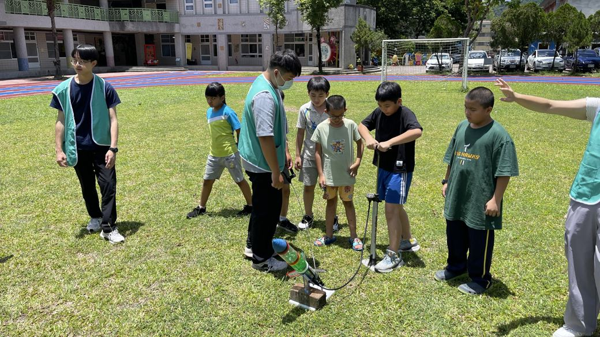
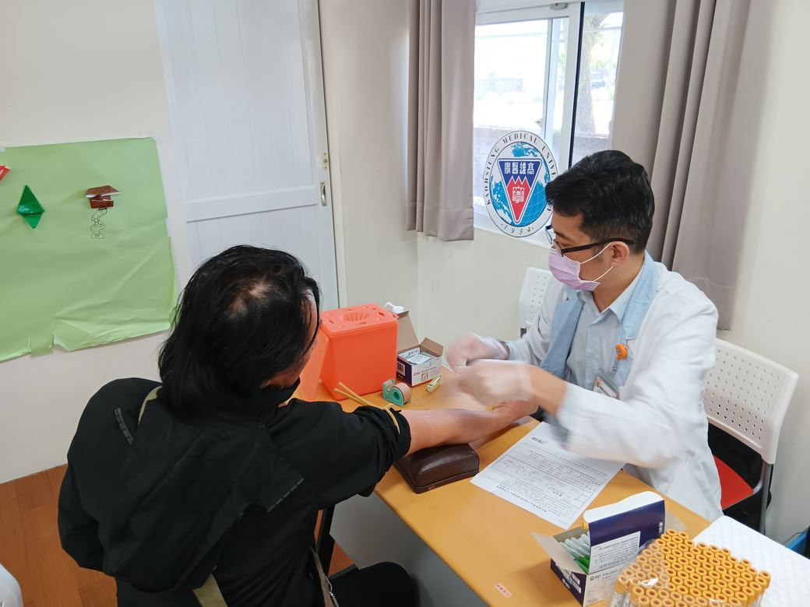
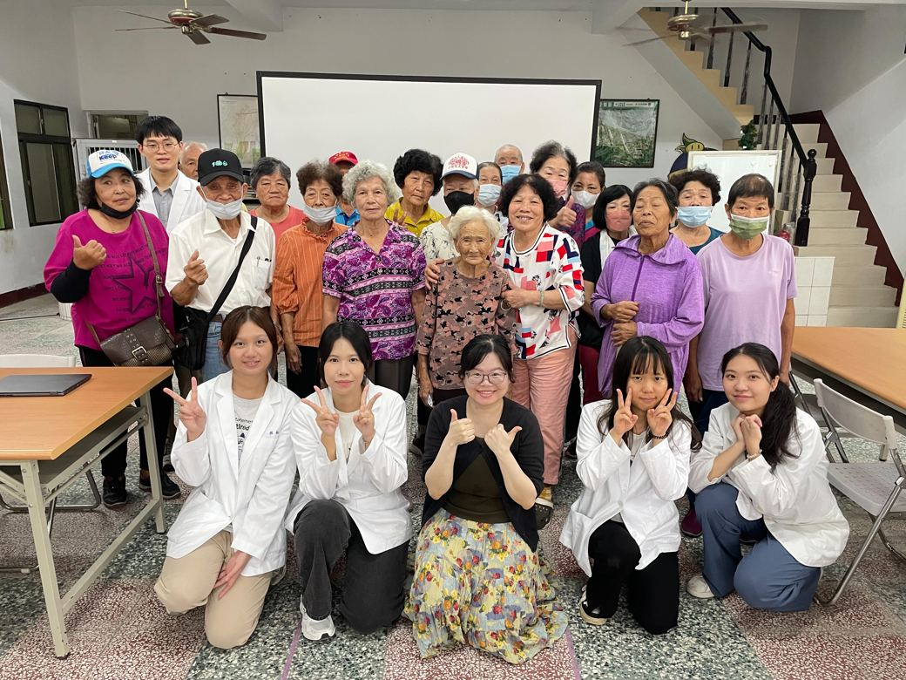
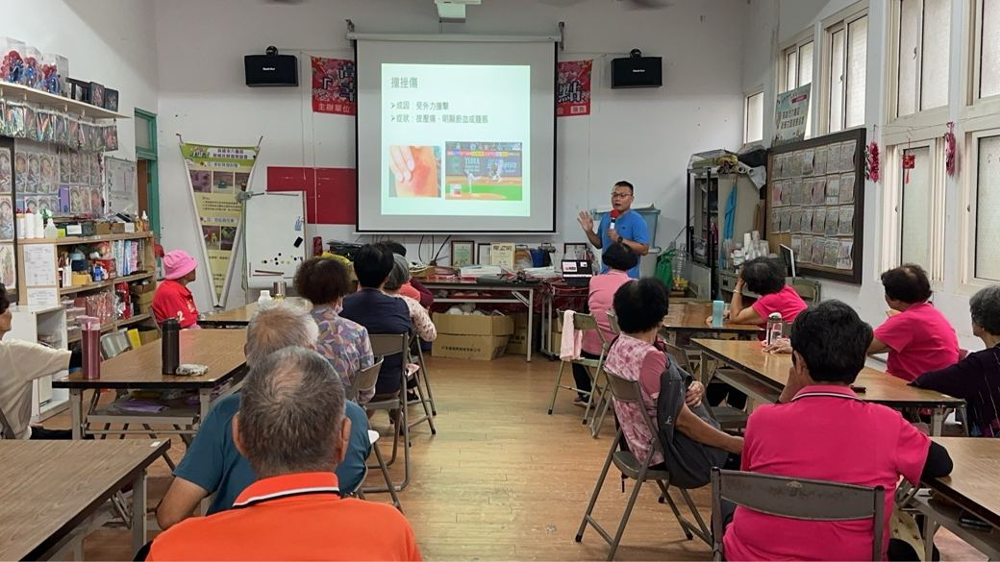
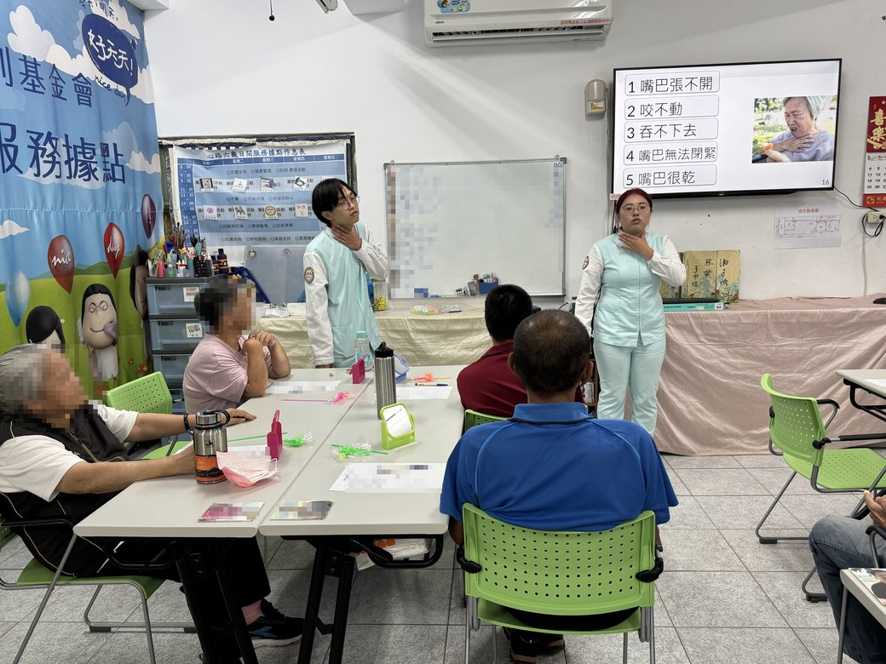
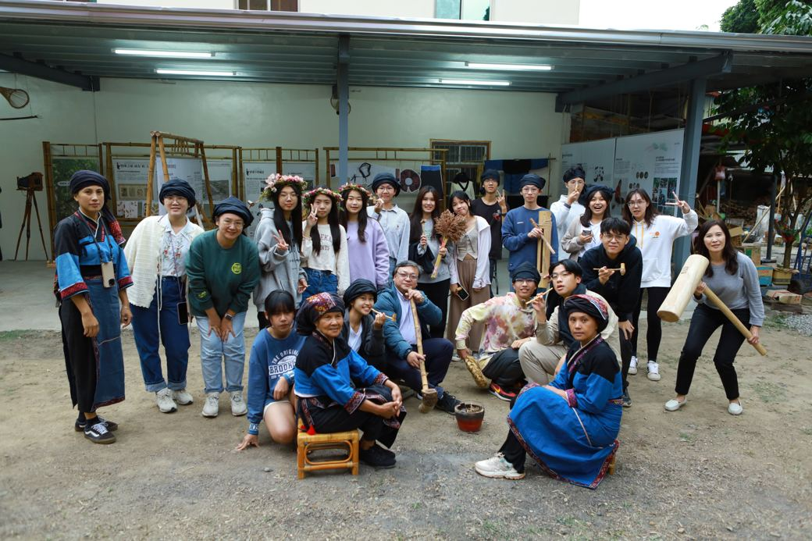
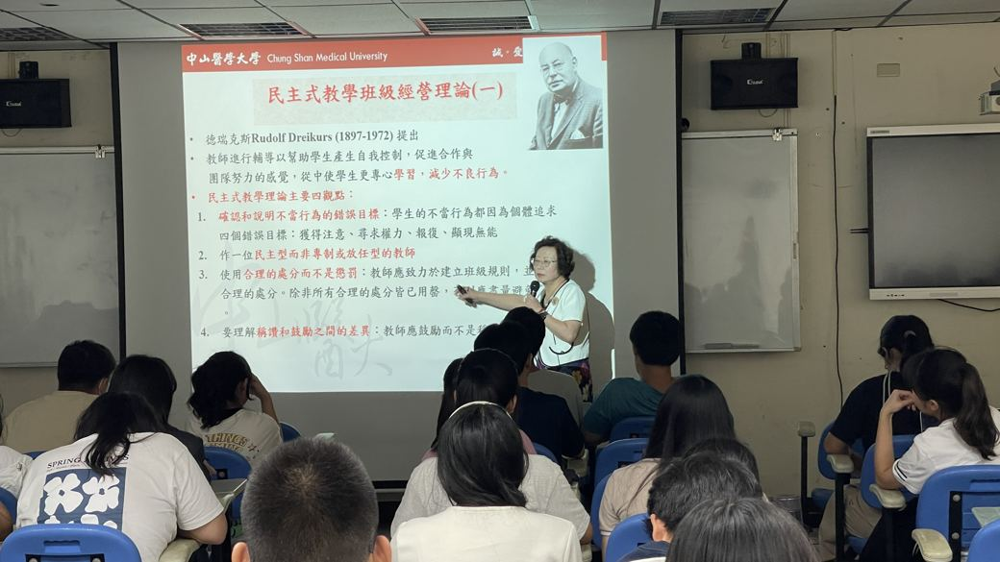
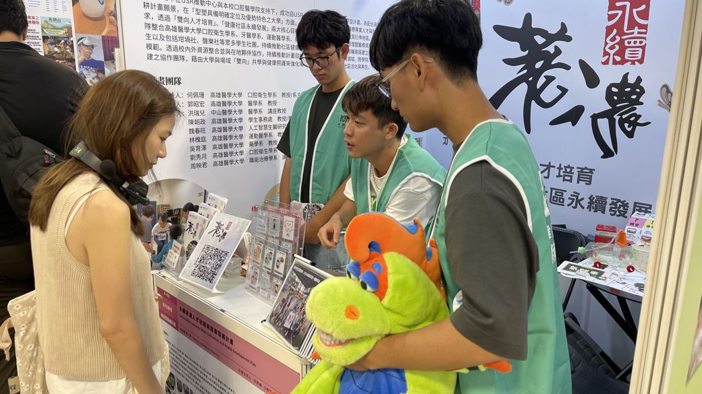

一條接續的路
從偏鄉出發，再回到偏鄉
呂盈萱從尼布恩合唱團出發，一路到高醫、當上聲樂社社長，再帶著五十多位學生回到寶來國中辦音樂營。
「偏鄉的孩子其實很少有做夢的機會。」
—— 呂盈萱．高醫聲樂社社長（中央社訊息平台，2026 年 1 月）
這條從偏鄉到大學、再回到偏鄉的路，是尼布恩與陳俊志醫師鋪下的；本計畫，接續著走下去。


永續荖濃 USR
教育部大學社會責任實踐計畫（USR）第四期．高雄醫學大學口腔醫學院

計畫的兩大核心宗旨
這裡的「雙向」，是兩邊同步成長。偏鄉的孩子透過科普課程與藝文活動，走出既有的認知框架，看見自己的可能；醫學大學的學生則把場域當成臨床前的實務考場，在設計課程與實際互動中，學會把專業說給別人聽。這條路上，兩邊都在長大。
政府的計畫補助不會永遠存在，所以我們想做的不是把醫療服務送進來就好，而是讓健康維護成為社區自己的事。結合各學系的專業實習課程與附設醫院資源，從幼兒發展評估、全齡口腔照護到社區體適能，三個面向長期深耕。當刷牙、運動與定期檢查變成日常，計畫的影響就能長期留下。
計畫的三大主軸
主軸一
以假日學堂的 STEAM 科普課程點燃學習動機與探究精神，輔以音樂陪伴與課後輔導。不以學科補救為目的，而是讓孩子擴大對世界的想像，看見自己的可能。



主軸二
結合各學系實習課程與附設醫院資源，從幼兒發展評估到全齡口腔照護與體適能推廣。目標是讓健康維護成為社區的共同認知，而不只是一次性的服務。

建山・興中・龍興附幼

六龜衛生所．附院與岡山醫院團隊

藥學系

運動醫學系

心路基金會
心路基金會六龜日間服務據點的學員多為智能障礙者，需要反覆而針對性的指導。口腔衛生學系師生每月進入據點陪伴練習，一年後多數學員已掌握合格的刷牙技巧。在地牙醫師觀察，過去需要根管治療的嚴重齲齒，如今多只需補牙即可處理。
主軸三
從在校理論、課程實作到場域實踐，串成完整的成長路徑。醫學生在設計教案中練習專業轉譯，在與居民互動中看見健康背後的社會因素，也確認自己的職業認同。



一條接續的路
呂盈萱從尼布恩合唱團出發，一路到高醫、當上聲樂社社長，再帶著五十多位學生回到寶來國中辦音樂營。
「偏鄉的孩子其實很少有做夢的機會。」
—— 呂盈萱．高醫聲樂社社長（中央社訊息平台，2026 年 1 月）
這條從偏鄉到大學、再回到偏鄉的路，是尼布恩與陳俊志醫師鋪下的；本計畫，接續著走下去。


在地合作網絡
計畫與六龜、桃源在地建立起長期合作關係，已與 20 個單位簽署合作備忘錄（MOU）。
龍興國小、六龜國小、新發國小、建山國小、興中國小、寶來國小、寶來國中、六龜高中
六龜關懷協會，以及新寮、新威、文武、中興、大津、新開部落等社區發展協會
六龜衛生所、心路基金會、康毅物理治療所、尼布恩人文教育關懷協會、尼布恩牙醫診所
…等共 20 個在地合作單位。